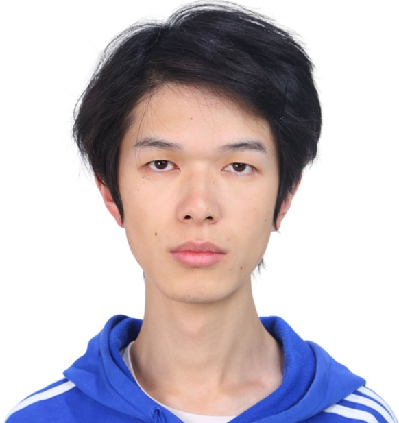
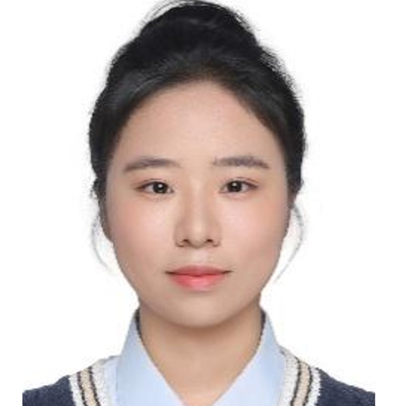

The AISI Lab is currently being built from the ground up. We are actively recruiting talented researchers at all levels. See our Hiring page to join us.


The AISI Lab aims to build a research environment characterized by intellectual curiosity, rigorous scientific thinking, and interdisciplinary collaboration. Lab members are encouraged to develop independent ideas and pursue ambitious research directions in a supportive, collaborative setting.
"Love science. Love thinking." The AISI Lab seeks individuals who are genuinely curious and passionate about science, committed to logical and critical thinking, highly self-motivated, and driven by the relentless pursuit of truth and deep compassion for patients.